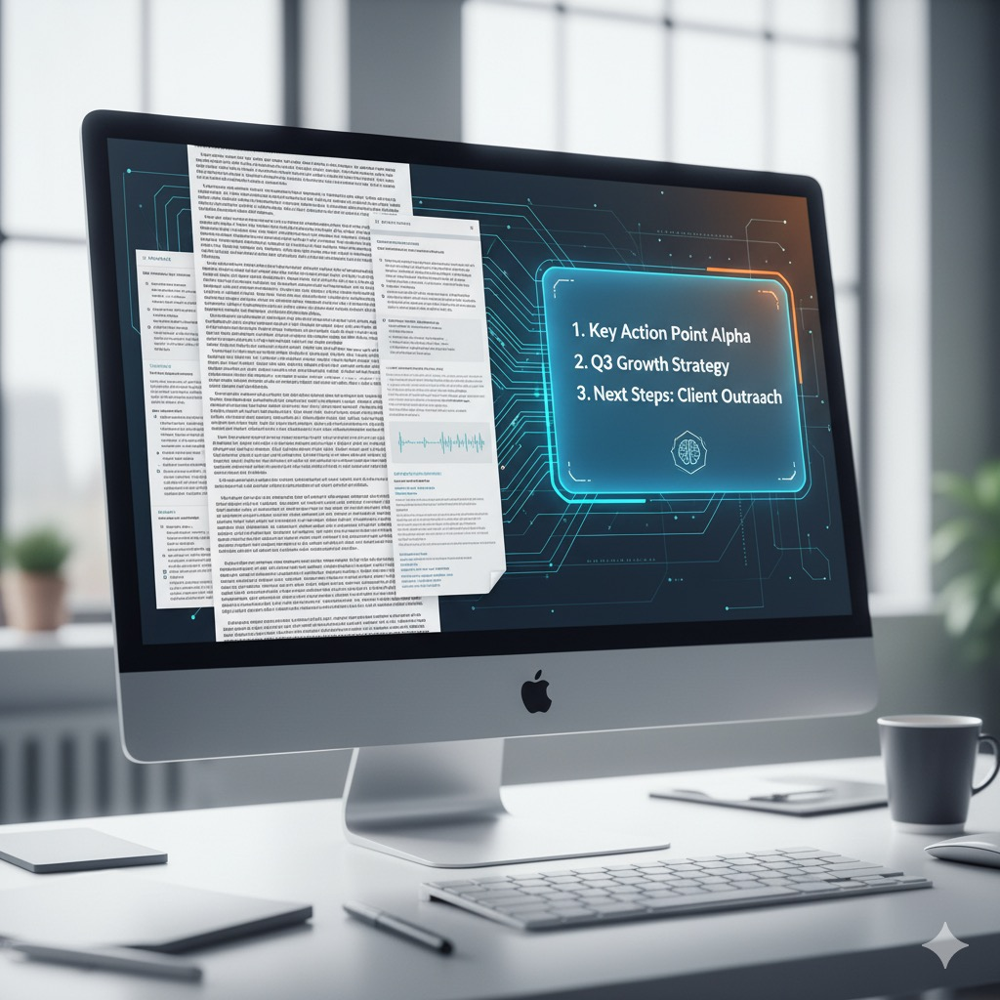
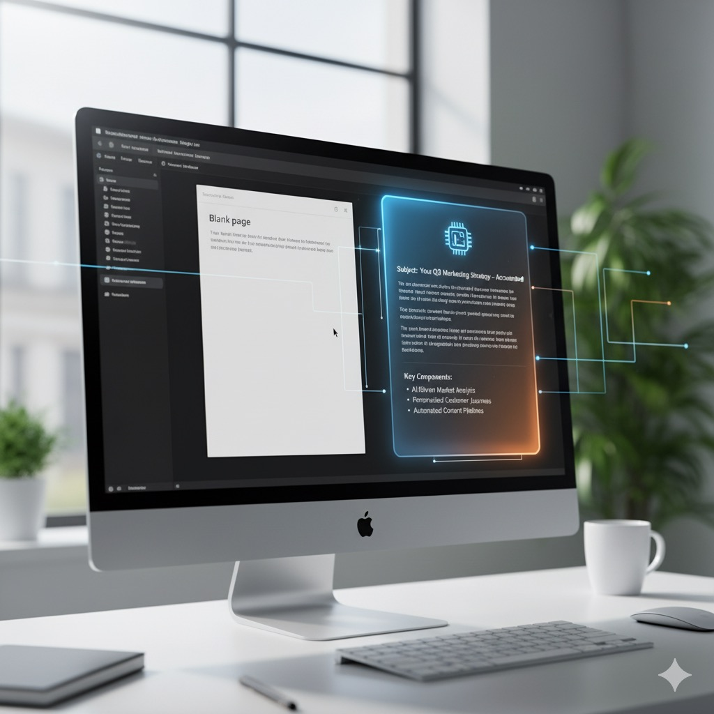

L'IA en 30 minutes par jour : Les 3 automatisations simples qui vont vous faire gagner 10 heures par semaine (sans coder)
🎣 Introduction : L'IA est (déjà) votre collègue invisible
Imaginez pouvoir vous libérer de 10 heures de travail répétitif chaque semaine. Ce n'est plus de la science-fiction. C'est l'Intelligence Artificielle.
Trop de professionnels pensent que l'IA est réservée aux data scientists ou aux entreprises qui peuvent investir des sommes astronomiques. C'est une erreur. L'IA est déjà l'assistant le plus puissant et le moins cher que vous n'avez jamais recruté.
Chez Décoder le digital, nous mettons fin au jargon. Dans cet article, nous allons passer outre les termes complexes (Machine Learning, Deep Learning, etc.) pour nous concentrer sur l'essentiel : trois applications d'IA concrètes et souvent gratuites que vous pouvez configurer en moins de 30 minutes par jour pour transformer votre productivité.
Prêt à récupérer votre temps ? Commençons par décoder ce qu'est réellement l'IA pour le professionnel.

I. 🧠 Décoder l'IA : Oubliez la science-fiction, pensez "assistant ultra-rapide"
Avant de passer à l'action, une minute de clarté. L'IA, pour le professionnel, n'est pas un robot menaçant. C'est simplement un logiciel capable d'apprendre et d'exécuter des tâches cognitives (écrire, classer, résumer) à une vitesse et une échelle que l'humain ne peut égaler.
Leçon clé : L'IA ne vise pas à remplacer l'humain. Elle est conçue pour l'augmenter. Son rôle est de prendre en charge les tâches de "brouillon" pour que vous puissiez vous concentrer sur la stratégie et la prise de décision (votre vraie valeur ajoutée).

II. 🛠️ Vos 3 Automatisations Simples pour 10 Heures Gagnées
Voici les trois zones de gains rapides, chacune utilisant des outils accessibles pour transformer votre routine.
Automatisation n°1 : La Synthèse Intelligente – Gagnez 3h/semaine
| Problème | Fatigue informationnelle (longs rapports, emails fleuves, réunions) |
|---|---|
| Outils suggérés | ChatGPT ou Gemini |
| Action en 5 min | Uploadez un texte ou transcription et demandez : "Résume en 3 points majeurs + 2 actions." |
| Pourquoi ça marche | Vous lisez directement la conclusion et l'étape suivante, gain de temps précieux. |

Automatisation n°2 : Le Générateur de Contenu "Draft" – Gagnez 5h/semaine
| Problème | Blocage de la page blanche (emails, descriptions, messages) |
|---|---|
| Outils suggérés | ChatGPT ou Gemini |
| Action en 5 min | PROMPT en 3 phrases : (1) Rôle : expert marketing. (2) Tâche : rédige un email froid. (3) Format : 5 lignes max pour PME. |
| Pourquoi ça marche | Vous ne perdez plus d’énergie à démarrer. Vous ajustez seulement les derniers 20%. |

Automatisation n°3 : Le Nettoyage et la Classification – Gagnez 2h/semaine
| Problème | Organisation et classement (emails, prospects) |
|---|---|
| Outils suggérés | Google Sheets ou Zapier |
| Action en 5 min | Demandez : "Classe cette colonne de 200 prospects en 'Chaud', 'Froid', 'À Relancer'." Ou créez une règle Zapier pour emails. |
| Pourquoi ça marche | L’IA structure vos données, transformant des informations brutes en intelligence stratégique. |
III. 🚀 Le Décollage : Votre Plan pour Récupérer 10 Heures
Vous avez maintenant la feuille de route. Mais l'adoption d'un nouvel outil est souvent le point de blocage.
🔑 Notre Conseil : Commencez par la tâche la plus détestée. Ne cherchez pas à automatiser toutes les 3 tâches en même temps. Choisissez celle que vous détestez le plus et engagez-vous à y consacrer 30 minutes aujourd'hui pour mettre en place l'outil. Le simple plaisir de ne plus faire cette tâche sera la motivation pour le reste.
L'IA n'est pas une complexité, c'est une opportunité offerte à tous pour se concentrer sur ce qui compte vraiment.
✅ Appel à l'Action
Quelle est la première tâche (synthèse, rédaction ou classification) que vous allez confier à votre nouvel assistant IA ?
Partagez l'outil ou la tâche que vous allez tester en commentaire ! Votre succès est notre mission !